ABOUT
● 会社案内

●
社訓
VISION
品質
納期
価格
当社では、最新の設備や長年培ってきた技術を活かし、最高「品質」の実現を追求しております。
また、お客様に対しては「納期」を守り、満足頂ける「価格」で提供できるよう、常に努力しております。
 

●
会社概要
OUTLINE
- 名称
- ゼネラルオプティクス株式会社
- 代表者
- 代表取締役 島津 小夜
- 設立年月日
- 平成6年 (1994年) 3月16日
- 資本金
- 1千万円
- 従業員数
- 73名 (2025年4月1日時点)
- 所在地
-
本社・豊川工場 (Google Map)
〒014-0711
秋田県大仙市豊川字八丁堀69-2
電話: 0187-57-3322 / FAX: 0187-57-3325鐘見内工場 (製品・機械倉庫)
〒014-0205
秋田県大仙市望見内字野中247-5 - 業務内容
-
- 光学レンズ加工
党据加工、球面研磨加工、芯取加工、反射防止膜加工、異形芯取加工 (多角形)、接合加工、墨塗り加工 - 多層膜蒸着加工
UVカット、IRカット、UV-IRカット、偏光ビームスプリッター、無偏光ビームスプリッター、シフトレス (+IA D)、バンドパスフィルター、誘電体多層膜、アルミ地反射膜、低温蒸着、フォグランプ蒸着 - プラスチックトレー販売
- 光学レンズ加工
- 株主
- ゼネラル株式会社 (100%)
- 関連企業
-
ゼネラル株式会社
〒174-0043 東京都板橋区坂下1-25-20 ゼネラルビル2F
TEL: 03-3969-3731 FAX: 03-3969-3732有限会社ゼネスコ
〒014-0711 秋田県大仙市豊川字八丁堀69-2
TEL: 0187-57-3322 FAX: 0187-57-3325大通ゼネラル光学公司
- 主要取引銀行
- 秋田銀行 長野支店
北都銀行 角館支店 - 主要取引先
- ゼネラル株式会社
株式会社タムロン
京セラ株式会社
株式会社シグマ
株式会社オハラ
株式会社住田光学ガラス
エドモンドオプティクスジャパン株式会社
AGCマイクロガラス株式会社
株式会社ケンコートキナー
株式会社ビクセン
他 多数
●
会社沿革
HISTORY
-
19943月ゼネラルオプティクス(株)を創業、光学レンズ用の芯取、多層膜蒸着加工の開始
-
19954月研磨、多層膜蒸着加工の開始
-
19964月本社業務を東京に移転
-
19976月品質管理グループを新設
-
19989月工場を増設し、研磨部門の拡張
-
20001月自動車部品の加工開始
-
20015月豊川工場完成
-
20026月多層膜蒸着(IRカット、UVカット等)を開始。
-
20038月シンクロン製蒸着機SDT1100を1台導入 (IAD付)。
-
20043月オプトラ技研製蒸着機OTFC1300を2台導入 (IAD付)。
-
20053月オプトラン製蒸着機OTFC1300を2台導入 (IAD無)。
-
20064月ISO9001認証取得。
-
20072月豊川工場へ全工程集約。
-
20093月ISO9001認証返上。
-
20116月昭和真空連続蒸着機SDS-3095G 1台導入。
-
20128月コジマエンジニアリング研磨機PM-SF-2台導入。
-
201512月湘南光学NC芯取機BE-WF-602N-OCS 3台導入。
-
20163月オリンパス分光光度計USPM-RU-W 1台導入。
-
20178月Zygo平坦度計GPI-XP/D IRS レーザーキット1台導入。
-
201912月コジマエンジニアリング研磨機PM-SF-2台導入。
-
20201月サン電子12槽式自動洗浄機1台導入。
-
20224月湘南光学芯取機BE-WF-602N-OCS 4台導入。
-
202310月オプトラン製蒸着機OTFC-1300DBIを1台導入(IAD)。
-
20241月宇田川製蒸着機6台導入。
●
環境方針
ENVIRONMENTAL POLICY
使用禁止物質、全廃物質を明確にし、環境の継続的改善の仕組みを構築し、環境負荷の低減及び資源の保護に努める。
- 環境に関する法律、条例、その他の要求事項を遵守し、環境改善に努める。
- 有害物の管理を行い、大気、土壌、水の汚染防止活動を推進する。
- 廃棄物の管理を行い、再利用、削減活動を推進する。
- エネルギーの管理を行い、省エネを推進する。
- 地域社会とのコミュニケーションを図り、地域の環境保全活動への協力を行う。
従業員に計画的な教育、啓発活動を行い、環境方針の理解と環境保全意識の向上に努める。
● お問い合わせ
CONTACT
各種製品のお問い合わせや
ご注文などお気軽にお問い合わせください。